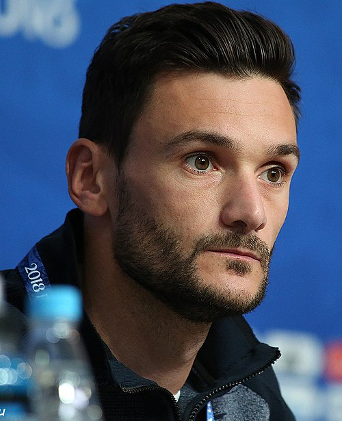

Los Angeles FC Portfolio
Current roster, squad value, top assets, U23 assets, honours, and market risk.

Los Angeles FC
USA / Canada | Major League Soccer | North America | CONCACAF
Roster source: Los Angeles FC | Checked 2026-05-24
Market Score vs Age
Squad portfolio shape by age and market score.
How to read: Each point shows how squad age relates to market value.
Position Strength
GK, CB, FB, CM, W, CF portfolio balance.
How to read: Bars compare strength across the main football position groups.
Squad Age Curve
Age distribution across current senior, prime, and veteran player groups.
How to read: Use this chart to spot youth pipeline, prime core, and veteran risk.
U23 Pipeline
Young player supply by market score, role security, and squad confidence.
How to read: Higher bars indicate stronger young-player depth inside the current squad.
Current Player Roster
| Player | Age | Position | ARES Score | Market Score | Tier | Trend | Profile |
|---|---|---|---|---|---|---|---|
 Son Heung-min Son Heung-min | 33 | FW | 66.6 | 75.2 | Core Starter | Rising | Open profile |
 Alexandru Băluță Alexandru Băluță | 32 | W | 66.1 | 72.4 | Core Starter | Rising | Open profile |
 Hugo Lloris | 39 | GK | 53.2 | 68.4 | Core Starter | Rising | Open profile |
Club Honours And Trophies
| Competition | Type | Count | Years | Source |
|---|---|---|---|---|
| National | Team honour | 1 | https://en.wikipedia.org/wiki/Los_Angeles_FC | |
| Competitions Titles Seasons | Team honour | 1 | https://en.wikipedia.org/wiki/Los_Angeles_FC | |
| MLS Cup 1 2022 | Team honour | 1 | 2022 | https://en.wikipedia.org/wiki/Los_Angeles_FC |
| Supporters' Shield 2 2019 , 2022 | Team honour | 2 | 2019, 2022 | https://en.wikipedia.org/wiki/Los_Angeles_FC |
| U.S. Open Cup 1 2024 | Team honour | 1 | 2024 | https://en.wikipedia.org/wiki/Los_Angeles_FC |
| Western Conference (Playoffs) 2 2022 , 2023 | Team honour | 2 | 2022, 2023 | https://en.wikipedia.org/wiki/Los_Angeles_FC |
| Western Conference (Regular Season) 3 2019 , 2022 , 2024 | Team honour | 3 | 2019, 2022, 2024 | https://en.wikipedia.org/wiki/Los_Angeles_FC |
| Honor Player Name Season | Team honour | 1 | https://en.wikipedia.org/wiki/Los_Angeles_FC | |
| MLS Landon Donovan MVP Award Carlos Vela 2019 | Team honour | 1 | 2019 | https://en.wikipedia.org/wiki/Los_Angeles_FC |
| CCL Golden Boot Denis Bouanga 2023 | Team honour | 1 | 2023 | https://en.wikipedia.org/wiki/Los_Angeles_FC |
| MLS Golden Boot Carlos Vela 2019 | Team honour | 1 | 2019 | https://en.wikipedia.org/wiki/Los_Angeles_FC |
| Diego Rossi 2020 | Team honour | 1 | 2020 | https://en.wikipedia.org/wiki/Los_Angeles_FC |
| Denis Bouanga 2023 | Team honour | 1 | 2023 | https://en.wikipedia.org/wiki/Los_Angeles_FC |
| MLS Goal of the Year Award Son Heung | Team honour | 1 | 2025 | https://en.wikipedia.org/wiki/Los_Angeles_FC |
| MLS Comeback Player of the Year Award Bradley Wright | Team honour | 1 | 2020 | https://en.wikipedia.org/wiki/Los_Angeles_FC |
| CCL Best Young Player Award Diego Palacios 2020 | Team honour | 1 | 2020 | https://en.wikipedia.org/wiki/Los_Angeles_FC |
| MLS Newcomer of the Year Award Cristian Arango 2021 | Team honour | 1 | 2021 | https://en.wikipedia.org/wiki/Los_Angeles_FC |
| MLS Young Player of the Year Award Diego Rossi 2020 | Team honour | 1 | 2020 | https://en.wikipedia.org/wiki/Los_Angeles_FC |
Transfer Needs
| Need | Position | Reason | Priority | Suggested Profile |
|---|---|---|---|---|
| Role security and U23 depth | Depth risk review | Squad portfolio balance uses ARES score, market score, age curve, and roster coverage. | Medium | Current roster players sorted by Market Score |
Source And Rights Note
Current roster and honours rows are sourced from Wikipedia where structured enough. Club images use safe non-logo Wikimedia Commons media only when a creator, license, source URL, checked date, and rights status are stored in the image registry; otherwise ARES shows a fallback visual.